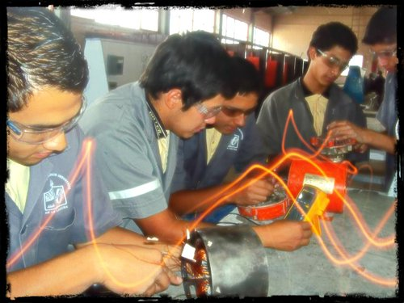

Electricidad
la carrera ofrece las competencias profesionales que permiten al estudiiar:
- Dar mantenimiento a los sistemas mecanicos
- manejo de las maquinas y hherramientas convencionales.
- Manejo de maquinas de control de numerico.
- Soldar piezas mecanicas con arco electrico y oxigas .
- Procesos de ajuste de piezas mecanicas
